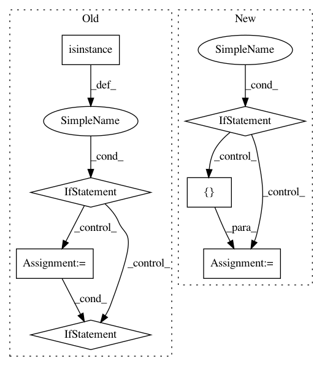

e24625095a33a5c9a2d016018203938e9bb2ccbf,keras/backend/cntk_backend.py,,rnn,#Any#Any#Any#Any#Any#Any#Any#Any#,1308
Before Change
j = 0
while j < len(constants):
if isinstance(constants[j], list):
i = 0
while i < len(constants[j]):
if _get_dynamic_axis_num(constants[j][i]) == 1:
constants[j][i] = C.sequence.broadcast_as(constants[j][i], inputs)
i += 1
else:
if _get_dynamic_axis_num(constants[j]) == 1:
constants[j] = C.sequence.broadcast_as(constants[j], inputs)
j += 1
if mask is not None and not has_seq_axis(mask):
if go_backwards:
After Change
rnn_constants = []
for constant in constants:
if isinstance(constant, list):
new_c = []
for c in constant:
if _get_dynamic_axis_num(c) == 1:
new_c.append(C.sequence.broadcast_as(c, rnn_inputs))
else:
new_c.append(c)
rnn_constants.append(new_c)
else:
if _get_dynamic_axis_num(constant) == 1:
rnn_constants.append(C.sequence.broadcast_as(constant, rnn_inputs))
else:
rnn_constants.append(constant)
else:
rnn_constants = constants
if mask is not None and not has_seq_axis(mask):
In pattern: SUPERPATTERN
Frequency: 3
Non-data size: 7
Instances
Project Name: keras-team/keras
Commit Name: e24625095a33a5c9a2d016018203938e9bb2ccbf
Time: 2018-04-14
Author: nisargjhaveri@users.noreply.github.com
File Name: keras/backend/cntk_backend.py
Class Name:
Method Name: rnn
Project Name: allenai/allennlp
Commit Name: 700abc65fd2172a2c6809dd9b72cf50fc2407772
Time: 2020-02-03
Author: mattg@allenai.org
File Name: allennlp/models/encoder_decoders/composed_seq2seq.py
Class Name: ComposedSeq2Seq
Method Name: __init__
Project Name: keras-team/keras
Commit Name: b0c4db281dfb798f8bfd8ea1320e78125f2a7709
Time: 2021-02-05
Author: scottzhu@google.com
File Name: keras/layers/preprocessing/index_lookup.py
Class Name: _IndexLookupCombiner
Method Name: compute